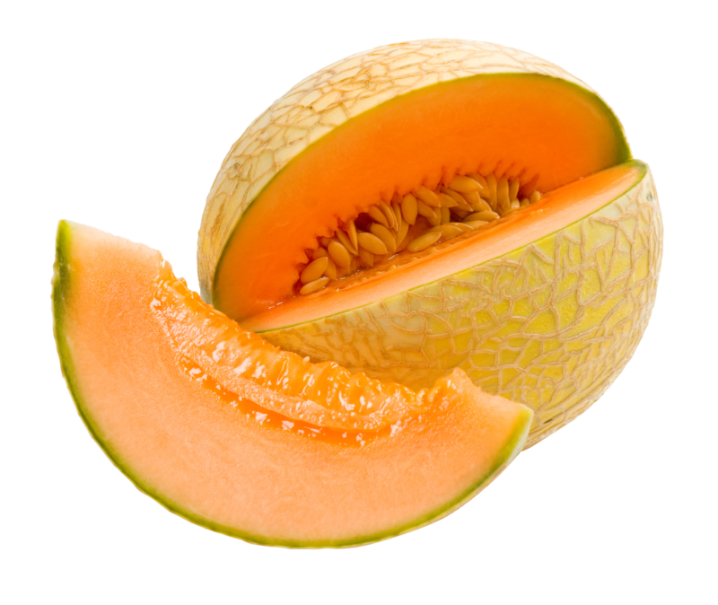

| Melon | Image | Taste | Appearance | Notes |
|---|---|---|---|---|
| Bitter Melon |  |
1 | 6 | Tastes horrible. A bit ugly but has cool texture. |
| Cantaloupe |  | 7 | 8 | Nice color. Cool skin texture. Nice, sweet flavor. |
| Honeydew | 5 | 4 | Tastes like slightly sweet water. Looks boring. Bojack does not like. | |
| Watermelon |  |
10 | 10 | Exquisite flavor. Picturesque appearance. Best melon. In fact, best fruit. |